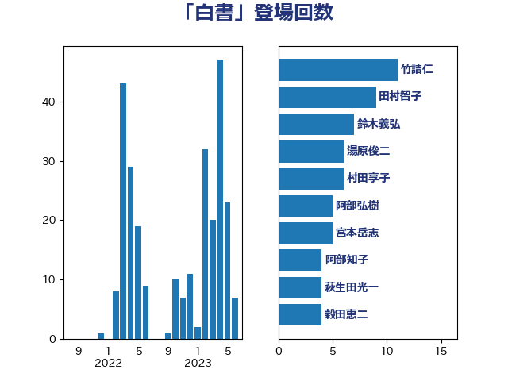

単語「白書」

| 竹詰仁 | 国民民主党 | 11 回 |
| 田村智子 | 日本共産党 | 9 回 |
| 鈴木義弘 | 国民民主党 | 7 回 |
| 湯原俊二 | 立憲民主党 | 6 回 |
| 村田享子 | 立憲民主党 | 6 回 |
| 阿部弘樹 | 日本維新の会 | 5 回 |
| 宮本岳志 | 日本共産党 | 5 回 |
| 阿部知子 | 立憲民主党 | 4 回 |
| 萩生田光一 | 自由民主党 | 4 回 |
| 穀田恵二 | 日本共産党 | 4 回 |
| 松川るい | 自由民主党 | 4 回 |
| 山本太郎 | れいわ新選組 | 4 回 |
| 青山大人 | 立憲民主党 | 3 回 |
| 近藤和也 | 立憲民主党 | 3 回 |
| 石川大我 | 立憲民主党 | 3 回 |
| 田中昌史 | 自由民主党 | 3 回 |
| 源馬謙太郎 | 立憲民主党 | 3 回 |
| 浜田靖一 | 自由民主党 | 3 回 |
| 平林晃 | 公明党 | 3 回 |
| 小西洋之 | 立憲民主党 | 3 回 |
| 倉林明子 | 日本共産党 | 3 回 |
| 伊波洋一 | 無所属 | 3 回 |
| おおつき紅葉 | 立憲民主党 | 3 回 |
| 音喜多駿 | 日本維新の会 | 2 回 |
| 青柳仁士 | 日本維新の会 | 2 回 |
| 長浜博行 | 無所属 | 2 回 |
| 鈴木敦 | 国民民主党 | 2 回 |
| 野村哲郎 | 自由民主党 | 2 回 |
| 進藤金日子 | 自由民主党 | 2 回 |
| 赤池誠章 | 自由民主党 | 2 回 |
| 赤嶺政賢 | 日本共産党 | 2 回 |
| 石井苗子 | 日本維新の会 | 2 回 |
| 田村貴昭 | 日本共産党 | 2 回 |
| 渡辺創 | 立憲民主党 | 2 回 |
| 永岡桂子 | 自由民主党 | 2 回 |
| 末次精一 | 立憲民主党 | 2 回 |
| 山田勝彦 | 立憲民主党 | 2 回 |
| 小野寺五典 | 自由民主党 | 2 回 |
| 堤かなめ | 立憲民主党 | 2 回 |
| 吉良よし子 | 日本共産党 | 2 回 |
| 吉川沙織 | 立憲民主党 | 2 回 |
| 吉川元 | 立憲民主党 | 2 回 |
| 住吉寛紀 | 日本維新の会 | 2 回 |
| 伊藤俊輔 | 立憲民主党 | 2 回 |
| 仁比聡平 | 日本共産党 | 2 回 |
| 井野俊郎 | 自由民主党 | 2 回 |
| 井上哲士 | 日本共産党 | 2 回 |
| 中野洋昌 | 公明党 | 2 回 |
| 中司宏 | 日本維新の会 | 2 回 |
| 三上えり | 立憲民主党 | 2 回 |
| 鬼木誠 | 立憲民主党 | 1 回 |
| 高橋千鶴子 | 日本共産党 | 1 回 |
| 高木かおり | 日本維新の会 | 1 回 |
| 馬場雄基 | 立憲民主党 | 1 回 |
| 阿部司 | 日本維新の会 | 1 回 |
| 長谷川英晴 | 自由民主党 | 1 回 |
| 長妻昭 | 立憲民主党 | 1 回 |
| 長友慎治 | 国民民主党 | 1 回 |
| 谷合正明 | 公明党 | 1 回 |
| 谷公一 | 自由民主党 | 1 回 |
| 西村明宏 | 自由民主党 | 1 回 |
| 西村康稔 | 自由民主党 | 1 回 |
| 藤井一博 | 自由民主党 | 1 回 |
| 落合貴之 | 立憲民主党 | 1 回 |
| 若松謙維 | 公明党 | 1 回 |
| 芳賀道也 | 国民民主党 | 1 回 |
| 舟山康江 | 国民民主党 | 1 回 |
| 自見はなこ | 自由民主党 | 1 回 |
| 羽田次郎 | 立憲民主党 | 1 回 |
| 美延映夫 | 日本維新の会 | 1 回 |
| 篠原豪 | 立憲民主党 | 1 回 |
| 笠井亮 | 日本共産党 | 1 回 |
| 窪田哲也 | 公明党 | 1 回 |
| 福重隆浩 | 公明党 | 1 回 |
| 福島伸享 | 無所属 | 1 回 |
| 神谷裕 | 立憲民主党 | 1 回 |
| 石川香織 | 立憲民主党 | 1 回 |
| 田村まみ | 国民民主党 | 1 回 |
| 田中健 | 国民民主党 | 1 回 |
| 牧野たかお | 自由民主党 | 1 回 |
| 清水貴之 | 日本維新の会 | 1 回 |
| 沢田良 | 日本維新の会 | 1 回 |
| 櫻井周 | 立憲民主党 | 1 回 |
| 梅谷守 | 立憲民主党 | 1 回 |
| 柴田巧 | 日本維新の会 | 1 回 |
| 東徹 | 日本維新の会 | 1 回 |
| 杉尾秀哉 | 立憲民主党 | 1 回 |
| 後藤茂之 | 自由民主党 | 1 回 |
| 庄子賢一 | 公明党 | 1 回 |
| 川田龍平 | 立憲民主党 | 1 回 |
| 岡田克也 | 立憲民主党 | 1 回 |
| 岡本あき子 | 立憲民主党 | 1 回 |
| 山添拓 | 日本共産党 | 1 回 |
| 山下貴司 | 自由民主党 | 1 回 |
| 山下芳生 | 日本共産党 | 1 回 |
| 小沼巧 | 立憲民主党 | 1 回 |
| 大塚拓 | 自由民主党 | 1 回 |
| 和田有一朗 | 日本維新の会 | 1 回 |
| 和田政宗 | 自由民主党 | 1 回 |
| 吉田久美子 | 公明党 | 1 回 |
| 古屋範子 | 公明党 | 1 回 |
| 北神圭朗 | 無所属 | 1 回 |
| 勝目康 | 自由民主党 | 1 回 |
| 伊藤渉 | 公明党 | 1 回 |
| 伊藤孝恵 | 国民民主党 | 1 回 |
| 伊藤信太郎 | 自由民主党 | 1 回 |
| 伊東信久 | 日本維新の会 | 1 回 |
| 井坂信彦 | 立憲民主党 | 1 回 |